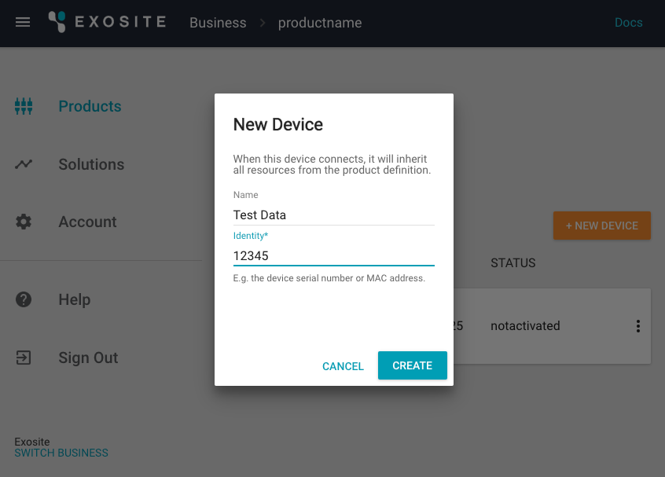
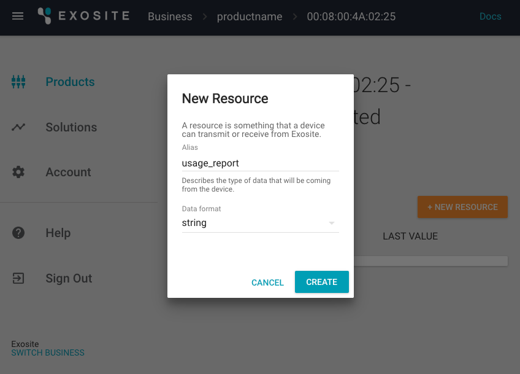

GWE Seed App
This guide provides an example solution displaying all the telemetric data from Gateway Engine as well as showing a Custom Gateway Application: "gmq-sine-demo".
Getting Started
Configure Murano
Create a Murano account (https://exosite.com/signup/) or log in to your existing account (https://www.exosite.io/).
Choose to create a New Product. Select Start from scratch as a starting point. Use whatever product name you like.

Navigate to the DEVICES tab to add a New Device called "Gateway". Use your gateway's MAC address as the Identity. Example format "00:08:00:4A:02:25".

Add another New Device called "Test Data". Use "12345" as the Identity.

Click on your Test Data device and add a New Resource with the Alias “test” and Data Format “float".

Add the "usage_report", "engine_report", "device_info", "update_interval", "engine_fetch", and "fetch_status" resources to your "Gateway" device as strings.

Navigate to the Solutions screen and create an New Solution. Select Start from scratch as a starting point. Name it whatever you like.

Install the Exosite CLI tool. https://github.com/exosite/exosite-cli
pip install exositeClone the GWE Seed App repository to your machine.
git clone https://github.com/exosite/GWE-Seed-AppInit the Exosite program and log in using your exosite.io credentials.
cd GWE-Seed-App exosite --initDeploy the solution.
exosite --deploy
Configure The Gateway
Install GWE on your gateway following the GWE Getting-started guide.
Set the update interval to post data every minute.
gwe -t 60Install the gmq-sine-demo onto the Gateway using the documentation https://github.com/exosite/gmq-sine-demo. Use the device identity as the Serial when prompted (12345).
Navigate to your solution page and check to see the data is flowing.